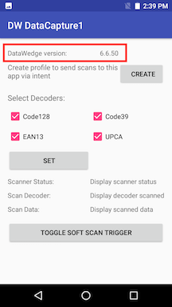
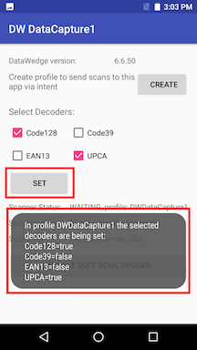

このサンプル アプリでは、スキャンしたバーコード データを Android インテントを介して受信する方法、DataWedge の構成方法、スキャナ ステータス通知の登録方法、および DataWedge Intent API を介してソフトウェア スキャン トリガを使用する方法を示します。
このサンプルで実行可能なアクション:
このサンプル アプリケーションは、DataWedge インテント API の使用方法のデモのための教育目的専用です。
| DataWedge API | アプリの機能 |
|---|---|
| バージョン情報の取得 | デバイスにインストールされている DataWedge のバージョンを取得します |
| プロファイルの作成 | 既存のプロファイルをチェックし、存在しない場合は作成します |
| 構成の設定 | 選択/選択解除されたデコーダを設定します |
| スキャナ ステータス通知の登録 | インテントを介してスキャナ ステータス変更の通知を受信するように登録します |
| ソフト スキャン トリガ | ソフト スキャン トリガ ボタンを使用してスキャンを制御します |
サンプル アプリをダウンロードし、ビルドして、起動します。
デバイスにインストールされている DataWedge のバージョンを確認します。
[作成] をタップします。“DWDataCapture1” プロファイルが存在しない場合は、それが作成されて、このアプリケーションに関連付けられます。
デコーダを選択/選択解除します。指定されていないその他のすべてのデコーダは、デフォルトに設定されます。[設定] をタップして保存します。
ハード トリガ ボタンを押すか、ソフト スキャン トリガ ボタンを切り替えてスキャンします。
表示された情報を確認します。
関連ガイド: